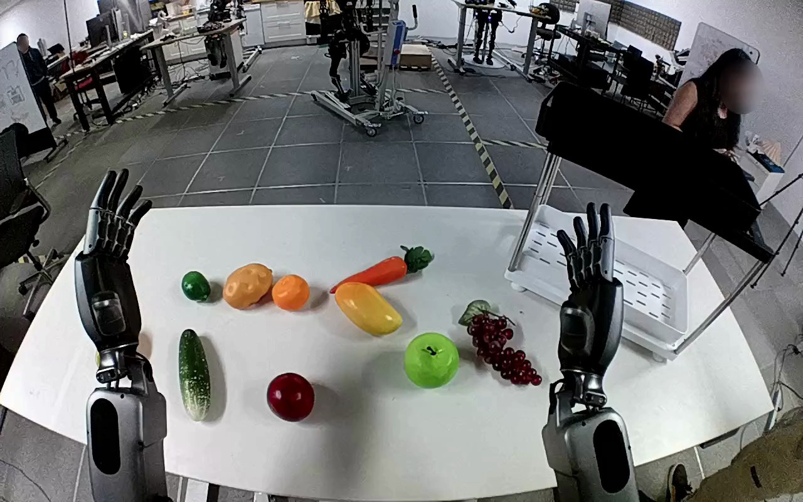

NVIDIA GR1 · 88
Video 88

Visual review action_review.json
{
"prompt_protocol": "humanoid_action_v1",
"prompt_provenance": "visually_authored_from_video_and_initial_frame",
"reviewed_contact_sheets": [
"sheet_001.jpg"
],
"inspected_frame_stride": 2,
"inspected_sampled_frame_count": 60,
"initial_scene": "Robot-facing egocentric view over a white table; a purple grape bunch lies beside a green apple on the robot right, immediately in front of the white lower tray of a small shelf. Both hands begin open above the table.",
"observed_sequence": [
{
"start_frame": 0,
"end_frame": 23,
"action": "Both hands remain raised and open; the right hand begins turning toward the grape bunch.",
"confidence": "high"
},
{
"start_frame": 24,
"end_frame": 49,
"action": "The right arm moves its open hand down beside and around the bunch of grapes on the tabletop; the left hand stays open away from the target.",
"confidence": "high"
},
{
"start_frame": 50,
"end_frame": 63,
"action": "Right fingers close around the middle of the grape bunch, securing it; the bunch begins to rise from its original position.",
"confidence": "high"
},
{
"start_frame": 64,
"end_frame": 91,
"action": "The right hand lifts the grape bunch clear of the table and carries it rightward into the white lower shelf tray. No hand-to-hand transfer or left-hand support occurs.",
"confidence": "high"
},
{
"start_frame": 92,
"end_frame": 111,
"action": "The closed right hand holds and lowers the grape bunch inside the right portion of the shelf tray.",
"confidence": "high"
},
{
"start_frame": 112,
"end_frame": 119,
"action": "The right fingers open and the grapes settle onto the white tray. The final open hand remains immediately beside the grape bunch; there is no completed withdrawal.",
"confidence": "high"
}
],
"arm_hand_roles": {
"right": "Sole manipulating hand: approaches, closes around grape bunch, lifts, transports, lowers into white lower shelf tray and opens to release.",
"left": "Stays raised and open on the robot left, without contact, support or transfer.",
"coordination": "Single-hand action; no bimanual coordination or interaction with a person."
},
"anatomical_side_evidence": {
"description": "The generation view looks forward from the robot toward its own forearms, which enter from the lower left and lower right without crossing. The active forearm is continuously traceable from the robot right into the image-right hand. Thumb orientation supports this anatomical identification; the raised opposite hand is the robot left.",
"confidence": "high",
"uncertainty": "Shoulders and torso are outside the egocentric crop, but paired forearm origins and hand orientation establish the side."
},
"terminal_state": "Purple grapes rest in the right portion of the white lower shelf tray; the right hand is open immediately beside them. The left hand remains open and raised. No withdrawal is shown.",
"uncertainties": [
"Precise contact between the grapes and individual fingers during lowering is partly occluded by the right hand. The final open fingers and visible bunch on the tray establish the observed release and placement."
],
"annotation_discrepancies": [],
"evidence_frame_indices": [
0,
32,
48,
58,
68,
78,
92,
110,
114,
117,
118,
119
],
"selected_execution_status": "success",
"video_id": "88",
"dataset": "NVIDIA_GR1_100",
"dedicated_review_agent": "review_gr1_88",
"review_source_video": "NVIDIA_GR1_100/88/original/original.mp4",
"source_frame_count": 120,
"source_fps": 20.0,
"native_detail_frames": [
32,
48,
58,
68,
78,
92,
110,
114,
117,
118,
119
],
"world_model_prompt": "The robot uses its right hand to grasp the bunch of purple grapes on the right side of the table and lift it clear. It carries the bunch to the white lower shelf, lowers it onto the shelf tray, and opens its fingers to leave the grapes resting there. Keep the camera fixed; preserve robot geometry, physically valid joint motion, and normal gripper opening and closing.",
"original_task_instruction": "Use the right hand to pick up purple grapes from right side of table to white shelf.",
"selected_segment": {
"start_frame": 0,
"end_frame_exclusive": 120,
"reason": "Complete original single-task reference; no cropping or trimming requested."
},
"source_video_sha256": "8a9fb635be3ca7f2e9796bdd4a80d91285ad1cb24adec641b3a1a2a54d5595b4",
"review_completed_at": "2026-10-13T18:37:46.257091+00:00"
}